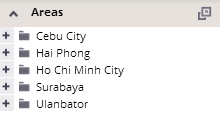
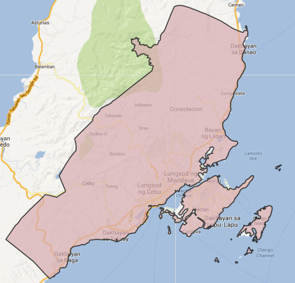
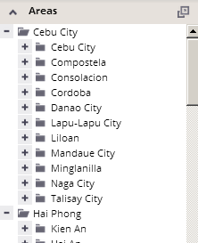
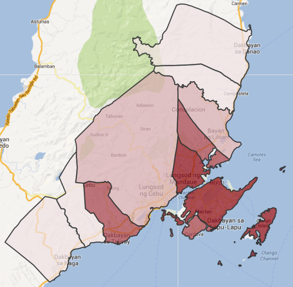
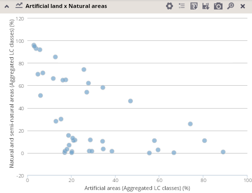
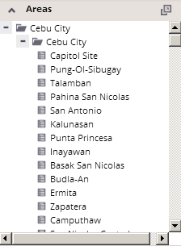
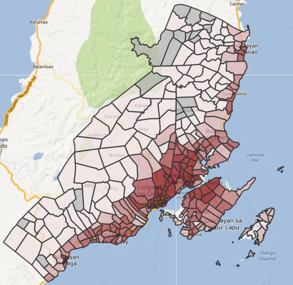
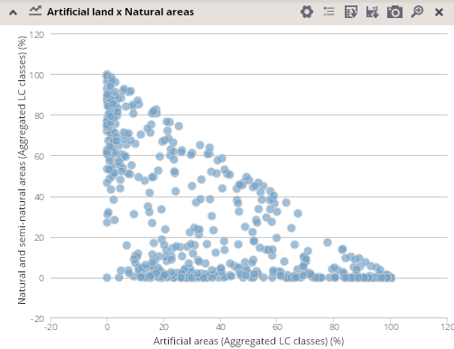

Working with hierarchy of analytical units
You can expand or collapse analytical units to get to more detailed levels of units. Units are simultaneously expanded also in the map and in all charts and tables.



By default, only units on the highest level of the units' hierarchy are displayed after opening the application.
Once units are expanded to lower levels, they remain expanded also in case that the theme or visualization is changed.